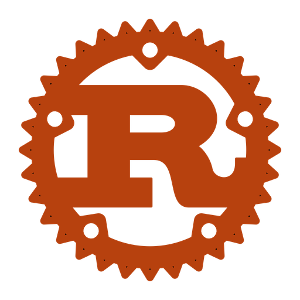
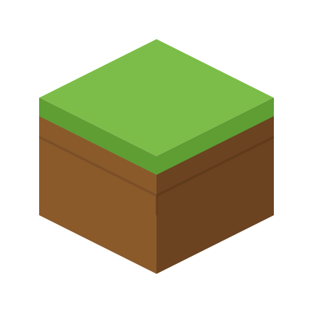

Welcome to RS Anarchy
A Minecraft 26.3 anarchy server running on Horizon, our Rust recode of the Minecraft server. No Java. No rules you didn't write yourself.
Built on Rust, from the ground up
RS Anarchy opened its doors on November 15th, 2026. It is an anarchy server: the world is open, the rules are light, and the players make the story. Everything runs on a custom build of the Minecraft server rather than the stock Java one.
The server is based on Minecraft 26.3, so the game, the blocks and the mechanics match the version you already play. The difference is under the hood, in a server written in Rust.

The Rust logo
A twelve-tooth gear with a hub at its center. It is the mark of the Rust programming language, and the gear is a nod to the language's engineering focus. Its signature color, #B7410E, is the orange you see across this site.
The Horizon logo
A rising sun above a horizon line, layered over three bands of ground. It stands for the project's name and for the upstream server we build on, which is a Rust rewrite of Minecraft Java Edition.

The grass block
An isometric grass block in the style of the game's own art. It marks the Minecraft side of the server: the world, the blocks and the 26.3 version everyone plays.
Horizon, our Rust recode
Horizon is an open-source reimplementation of Minecraft: Java Edition 26.3, written from scratch in Rust as one native program with no Java. It reads the same worlds, follows the same rules and generates the same terrain as the Java game. RS Anarchy runs a fork of it with custom additions of our own.
What Horizon is
Horizon ships no Mojang files and never downloads them. Players need their own copy of Minecraft: Java Edition 26.3, and the server runs on game files prepared from it.
- One native program, no Java runtime needed
- Checked against vanilla with differential tests
- Lighter on memory than the Java server
What we added
Our fork keeps Horizon's core and adds our own changes on top, including the anarchy extras that make RS Anarchy what it is: the cracked login, the random spawn, the ignore list and the anarchy commands. The Tab list header and footer are configured separately.
- Built on Minecraft 26.3 and the Rust server
- Anarchy extras built in and switched on for RS Anarchy
- Custom Tab list with our header, footer and link line
What's enabled only in anarchy mode
These features only switch on in anarchy mode. Each one is part of the anarchy extras, and none of them run on the server when anarchy mode is off.
Cracked login
Players with an account use /login to get in, and new players create one with /register. You can change your password with /changepassword. Until you log in, you are held frozen and hidden on a platform in the End, and you are kicked if you take too long.
Private password storage
Passwords are never stored or logged in plain text. Each one is salted and stretched with 2,048 rounds of SHA-256 before it reaches the database.
Random spawn
New players, and anyone without a bed, land at a random safe spot within 1,000 blocks of spawn. Water, lava, leaves and cactus are avoided, and you get five seconds of no damage after you land.
Ignore list
Use /ignore <player> to hide someone's chat, emotes, whispers and character lines. It is a toggle, and /ignorelist shows who you have ignored.
Whispers and skins
/whisper <player> <message> sends a private message, and /skin set <nickname> puts a named Mojang profile's skin on your character.
World statistics
/worldstats shows how many players have spawned on the server at least once, how old the map is, and how much the world weighs on disk.
Discord and social links
/discord and /addsocial give the server's links, so you always know where the community lives.
Anarchy commands
Everything you type to use the anarchy extras, in one place.
| Command | What it does | Notes |
|---|---|---|
/register | Create your account and password | First login only |
/login | Log in to your account | 5 failed tries means a 60-second wait |
/changepassword | Change your password | Logged-in players only |
/ignore <player> | Toggle ignoring a player | Hides chat, emotes and whispers |
/ignorelist | List the players you ignore | |
/whisper <player> <message> | Send a private message | Alias of /msg |
/skin set <nickname> | Use a Mojang profile's skin | 10-second cooldown between lookups |
/worldstats | Server and world statistics | |
/discord | Get the Discord link | |
/addsocial | Get the social links |
Join RS Anarchy
Founded November 15, 2026. Bring your own copy of Minecraft 26.3, connect to rsanarchy.org, and make your own story.